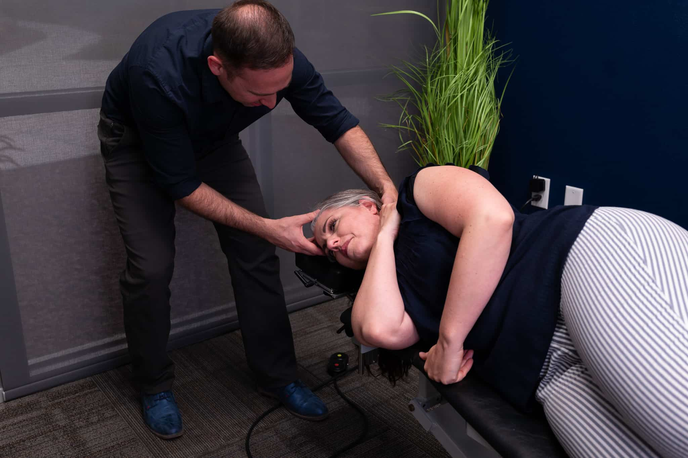

Recovery
Help reduce soreness and inflammation after workouts or strain.
Services
Choose the service that matches your goal. If you’re unsure, we’ll help you pick the best next step.
A gentle, precise approach focused on the upper cervical spine to promote balance throughout the nervous system.

A calming session in a full-size bed designed to support cellular repair, circulation, and recovery.
Help reduce soreness and inflammation after workouts or strain.
Support improved skin tone and collagen production.
Support better daily function and movement quality.
Non‑invasive, drug‑free pain relief backed by clinical research and FDA clearance.
Apply directly to the discomfort area for focused support.
Designed to complement broader care plans.
An option for athletes looking to recover without downtime.
A practical tool for tight muscles, trigger points, inflammation, and mobility improvements.
Twitch responses can indicate muscle tension is releasing.
Support improved blood flow and healing response.
Get back to training and everyday movement with less discomfort.
Tell us your goal and we’ll map you to the right service.